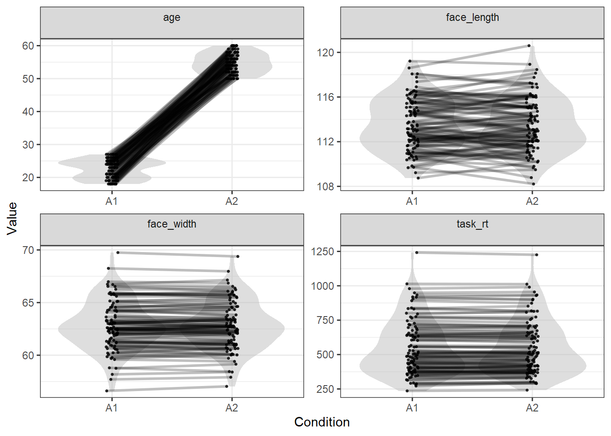

In this example I’ll show how you can match multiple control variables, some numeric and some categorical.
library(tidyverse)
library(LexOPS) # package with functions for item-wise matchingstim_pool <- read_csv("stim_pool.csv")To control for multiple variables in one stimulus set, we can just add more calls to control_for(). We’ll control for:
stim <- stim_pool %>%
set_options(id_col = "stim_id") %>%
split_by(age, 1:28 ~ 50:100) %>%
control_for(face_width, -0.5:0.5) %>%
control_for(face_length, -2:2) %>%
control_for(task_rt, -25:25) %>%
control_for(gender) %>%
generate(n=100, seed=42)## Generated 5/100 (5%). 6 total iterations, 0.83 success rate.
Generated 10/100 (10%). 12 total iterations, 0.83 success rate.
Generated 15/100 (15%). 18 total iterations, 0.83 success rate.
Generated 20/100 (20%). 27 total iterations, 0.74 success rate.
Generated 25/100 (25%). 32 total iterations, 0.78 success rate.
Generated 30/100 (30%). 38 total iterations, 0.79 success rate.
Generated 35/100 (35%). 44 total iterations, 0.80 success rate.
Generated 40/100 (40%). 51 total iterations, 0.78 success rate.
Generated 45/100 (45%). 56 total iterations, 0.80 success rate.
Generated 50/100 (50%). 66 total iterations, 0.76 success rate.
Generated 55/100 (55%). 75 total iterations, 0.73 success rate.
Generated 60/100 (60%). 82 total iterations, 0.73 success rate.
Generated 65/100 (65%). 90 total iterations, 0.72 success rate.
Generated 70/100 (70%). 96 total iterations, 0.73 success rate.
Generated 75/100 (75%). 102 total iterations, 0.74 success rate.
Generated 80/100 (80%). 111 total iterations, 0.72 success rate.
Generated 85/100 (85%). 116 total iterations, 0.73 success rate.
Generated 90/100 (90%). 125 total iterations, 0.72 success rate.
Generated 95/100 (95%). 133 total iterations, 0.71 success rate.
Generated 100/100 (100%). 140 total iterations, 0.71 success rate.This gives us a list of matched pairs of young and old faces. Each row has a young face A1, and old face A2, and match_null (usually only relevant for designs with >2 conditions - see 04 - Setting the Match Null):
stim## # A tibble: 100 x 4
## item_nr A1 A2 match_null
## <int> <chr> <chr> <chr>
## 1 1 face_4884 face_3822 A1
## 2 2 face_4022 face_3870 A1
## 3 3 face_3985 face_3653 A2
## 4 4 face_3282 face_3269 A2
## 5 5 face_3143 face_1601 A1
## 6 6 face_2896 face_703 A1
## 7 7 face_2328 face_2149 A2
## 8 8 face_1106 face_1798 A1
## 9 9 face_3958 face_4435 A1
## 10 10 face_2969 face_3571 A1
## # ... with 90 more rowsWe can check the values for each item with long_format():
long_format(stim)## # A tibble: 200 x 9
## item_nr condition match_null stim_id gender age task_rt face_width face_length
## <int> <chr> <chr> <chr> <chr> <dbl> <dbl> <dbl> <dbl>
## 1 1 A1 A1 face_4884 m 19 801. 63.6 115.
## 2 1 A2 A1 face_3822 m 54 807. 63.6 116.
## 3 2 A1 A1 face_4022 m 24 317. 60.8 114.
## 4 2 A2 A1 face_3870 m 56 328. 60.7 116.
## 5 3 A1 A2 face_3985 f 27 487. 63.3 115.
## 6 3 A2 A2 face_3653 f 52 465. 62.8 116.
## 7 4 A1 A2 face_3282 f 21 639. 61.3 110.
## 8 4 A2 A2 face_3269 f 57 637. 61 111.
## 9 5 A1 A1 face_3143 f 21 1014. 63.3 111.
## 10 5 A2 A1 face_1601 f 50 1012. 63.4 111.
## # ... with 190 more rowsWe can look at the quality of the matching of the numeric values with plot_design():
plot_design(stim)
This shows the expected result, where: